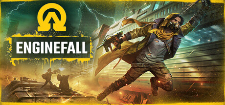
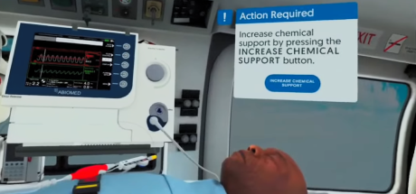
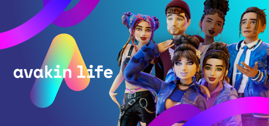
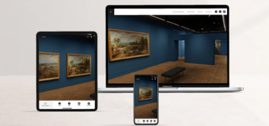
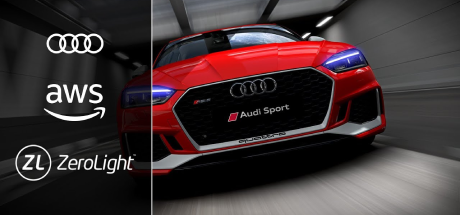
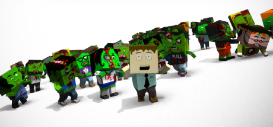

Red Rover Interactive
Lead Software Engineer
2023 - 2026

Enginefall is a player-driven survival/crafting shooter combining large-scale multiplayer gameplay with MMO-style online systems.
As Lead Software Engineer, I built and led the Backend and Tools engineering function, establishing the capability required to deliver game services, infrastructure and internal tooling.
FundamentalXR
Principal Software Engineer
2022 - 2023

FundamentalXR delivers multi-user haptic VR surgical training simulations, combining immersive technology with clinically accurate surgical workflows.
As Principal Software Engineer, I provided technical leadership across a multidisciplinary team of engineers, artists, product specialists and medical experts, translating complex requirements into practical technical solutions.
Lockwood Publishing
Senior Software Engineer
2019 - 2022

Avakin Life is a large-scale social virtual world with 200M+ registered users across mobile and PC platforms. As part of the Core Technology/R&D team, I developed core platform technologies spanning C++, C#, Unity, Node.js and JavaScript.
Led the redesign and rewrite of Avakin Life's apartment configuration tooling, replacing a manual content workflow with a dedicated desktop editor that reduced creation time from hours to minutes. Also contributed to server-side asset processing technology, improving performance on lower-end devices and supporting future user-generated content.
Hedgehog Lab
Lead XR Programmer
2017 - 2019

Built and established hedgehog lab's XR engineering capability, delivering immersive AR and VR applications for enterprise clients across art, energy and industrial sectors. As Lead XR Programmer, I provided technical leadership across XR, web and backend engineers, translating ambitious product concepts into practical architectures.
Architected a distributed XR platform combining Unity VR applications, WebGL experiences, Drupal-based backend services and cloud telemetry systems to deliver personalised virtual experiences.
Zerolight
Software Engineer
2016 - 2017

Zerolight develops real-time 3D visualisation technology for automotive brands including Audi and Volkswagen. I worked on graphics, rendering and streaming technologies powering cloud-delivered interactive vehicle configurators and immersive automotive experiences.
Improved rendering and video streaming performance for showroom installations, identifying rendering bottlenecks and designing a novel buffering solution to deliver smoother playback. Also developed a panoramic VR visualisation system for Samsung Gear VR, enabling cloud-generated vehicle visualisations to be experienced on mobile VR hardware.
Nosebleed Interactive
Technical Lead
2012 - 2016

Progressed from Software Engineer to Technical Lead, helping grow an independent studio from a small startup into a successful multi-platform games developer. Led engineering across custom engine development, gameplay systems and multi-platform releases, shipping titles including The Hungry Horde and Vostok Inc.
Designed and developed core technology powering The Hungry Horde, including a custom 3D engine and rendering systems targeting PlayStation Mobile and PlayStation Vita. As Technical Lead, provided technical direction across a team of engineers, overseeing architecture, code quality, hiring, mentoring and delivery across console and mobile platforms.